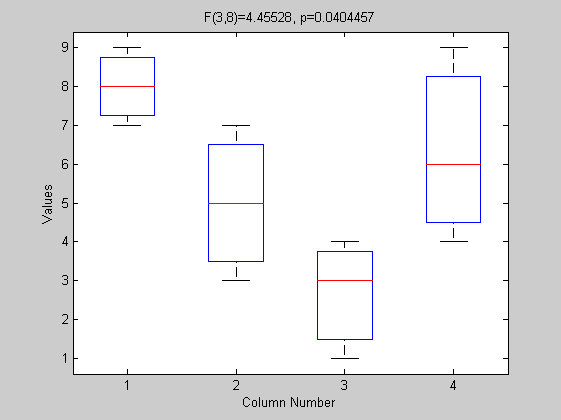
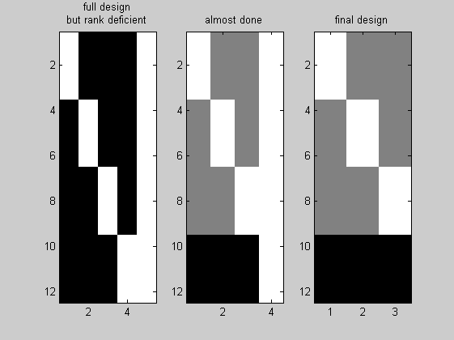
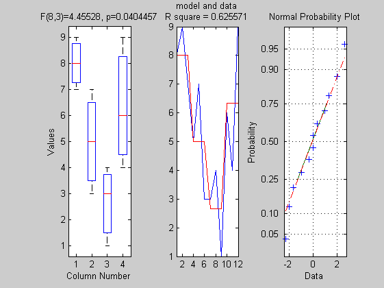

Contents
% Now that we have seen how to solve a multiple regression, % I will show how an ANOVA can be solved just the same way clc clear all close all
Theory
% first a little reminder on why this is an analysis of variance % even though we are a priori interested in knowing if the mean % values between 2 or more groups are different % remember as well that variance = sum(x-mean(x)).^2 / N-1 % = sum of squares / N-1 % % Consider the following data set: % % -------------------------------------------------- % gp 1 gp2 gp3 gp4 % -------------------------------------------------- % observation 1 8 5 3 6 % observation 2 9 7 4 4 % observation 3 7 3 1 9 % -------------------------------------------------- % means 8 5 2.66 6.33 % sum of squares 2 8 4.66 12.66 --> sum = 27.33 % -------------------------------------------------- % overall mean 5.5 % overall sum of squares 73 % -------------------------------------------------- % % Adding the some squares of each group gives 27.32. % Now repeating this computations, ignoring the group membership, % that is computing the total SS based on the overall mean, % we get the number 73. In other words, computing the % variance (sums of squares) based on the within-group variability % yields a much smaller estimate of variance than computing it based % on the total variability (the overall mean). The reason for this in % the above example is of course that there is a large difference between % means, and it is this difference that accounts for the difference in the SS.
Sum Square equations
%----------------------------------% % SS total = SS intra + SS inter % % = SS groups + SS error % %----------------------------------% % % from the previous table we have % data y = [8 9 7 5 7 3 3 4 1 6 4 9]'; % SS SS_Total = sum((y-mean(y)).^2) SS_intra = sum((y(1:3)-mean(y(1:3))).^2) + ... sum((y(4:6)-mean(y(4:6))).^2) + sum((y(7:9)-mean(y(7:9))).^2) + ... sum((y(10:12)-mean(y(10:12))).^2) SS_inter = SS_Total - SS_intra % the statistical test is as usual effect/error but adjusted by the dof df_inter = 3; df_intra = length(y) - df_inter -1; F = ((SS_inter)/df_inter)/(SS_intra/df_intra); pval = 1 - fcdf(F, df_inter, df_intra); % make the figure boxplot([8 9 7 ;5 7 3 ;3 4 1 ;6 4 9]') mytitle = sprintf('F(%g,%g)=%g, p=%g',df_inter, df_intra, F, pval); title([mytitle])
SS_Total =
73
SS_intra =
27.3333
SS_inter =
45.6667
 Matrix solution
% definition of groups % first we have to describe the data with a set of % predictors as for the multiple regression n = 3; X = [ones(1,n) zeros(1,3*n); ... zeros(1,n) ones(1,n) zeros(1,2*n); ... zeros(1,2*n) ones(1,n) zeros(1,n); ... zeros(1,3*n) ones(1,n); ones(1,4*n)]'; figure subplot(1,3,1); imagesc(X); colormap('gray'); title({'full design'; 'but rank deficient'}) % however X is rank deficient, i.e. one can describe one column as a % linear combination of the others - geometrically speaking one should % be able to combine the vectors in X to go back to the origin 0. % Since one vector is a multiple of the other there is no way one can % do that, the matrix X has to be modified X = [ones(1,n) zeros(1,2*n) (ones(1,n)*-1); ... zeros(1,n) ones(1,n) zeros(1,n) (ones(1,n)*-1); ... zeros(1,2*n) ones(1,n) (ones(1,n)*-1); ones(1,4*n)]'; subplot(1,3,2); imagesc(X); colormap('gray'); title('almost done') % finally, since the fisrt column stands for cst we can take it out X = [ones(1,n) zeros(1,2*n) (ones(1,n)*-1); ... zeros(1,n) ones(1,n) zeros(1,n) (ones(1,n)*-1); ... zeros(1,2*n) ones(1,n) (ones(1,n)*-1)]'; subplot(1,3,3); imagesc(X); colormap('gray'); title('final design') % the solution of y=X*betas + cst + e is the same as for the multiple % regression betas = inv(X'*X)*X'*y; cst = mean(y) in this case; % model = X*betas + cst; but we can make things faster using the built % in function glmfit (part of the stat toolbox) [betas, error, stats] = glmfit(X,y,'normal'); yhat = glmval(betas, X, 'identity'); % Yhat = model error = y - yhat; % then as for the multiple regression ss_total = norm(y - mean(y)).^2; ss_error = norm(error).^2; Rsquare = 1 - ss_error/ss_total; % fitting statistic R2 = part of explained variance F = (Rsquare *(length(y)-rank(X)-1))/((1- Rsquare)*rank(X)); pval = 1 - fcdf(F, rank(X), (length(y)-rank(X)-1)); % make cool figures which tell us more than the basic ANOVA figure; subplot(1,3,1); boxplot([8 9 7 ;5 7 3 ;3 4 1 ;6 4 9]'); mytitle = sprintf('F(%g,%g)=%g, p=%g',(length(y)-rank(X)-1), rank(X), F, pval); title([mytitle]) subplot(1,3,2); plot(y); hold on; plot(yhat,'r'); axis tight mytitle = sprintf('R square = %g', Rsquare); title({'model and data';[mytitle]}) subplot(1,3,3); normplot(error); 
Summary
% matlab functions % glmfit and glmval to solve the normal equations and get the model % norm and rank ; size of a vector and rank of a matrix (relates to dof) % [betas, error, stats] = glmfit(X,y,'normal'); % yhat = glmval(betas, X, 'identity'); % norm(y) % rank(X) % linear model % we have seens that one can express the groups by dummy variables (1,0,-1) % dummy coding specifies groups following the ANOVA equation % multiple regression and ANOVA are the same :-) % the error is the the difference between the data y and the predictions % yhat; while the ss of the effect is the sum of the square distances of % the prediction norm(yhat-mean(yhat)).^2